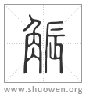
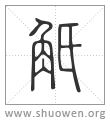

𧣨
觶或从辰[𨑃]。

觗
禮經觶。
宋代 徐鉉 徐鍇 注釋
臣鉉等曰：當从戰省乃得聲。
清代 段玉裁《說文解字注》
- 鄉飮酒觶。
鄉當作禮。禮經十七篇用觶者多矣。非獨鄉飮酒也。因下文一人洗舉觶之文見鄉飮酒篇。淺人乃改鄉字。觶鉉本作角。非。當同觚下作爵。
- 从角。單聲。
支義切。十六部。按鄭駁異義云。今禮角旁單。然則是今文禮作觶也。單聲而支義切。由古文本作觗。從氏聲。後遞變其形從辰、從單爲聲。而古音終不改也。
- 禮曰。一人洗舉觶。
鄉飮酒曰。一人洗升舉觶于賔。鄉射禮曰。一人洗舉觶于賔。禮經言觶多矣。略舉其一耳。
- 觶受四升。
異義云。今韓詩一升曰爵。盡也。足也。二升曰觚。觚、寡也。飮當寡少。三升曰觶。觶、適也。飮當自適也。四升曰角。角、觸也。不能自適。觸罪過也。五升曰散。散、訕也。飮不能自節。人所謗訕也。緫名曰爵。其實曰觴。觴者、餉也。觥、廓也。箸明之皃。君子有過。廓然箸明。非所以餉。不得名觴。古周禮說。爵一升。觚三升。獻以爵而酬以觚。一獻而三酬。則一豆矣。食一豆肉。飮一豆酒。中人之食。許愼謹案。周禮云一獻而三酬當一豆。若觚二升。不滿一豆矣。鄭駁之曰。周禮獻以爵而酬以觚。觚、寡也。觶字角旁箸友。誤字汝潁之閒。師讀所作。今禮角旁單。古書或作角旁氏。則與觚字相近。學者多閒觚。寡聞觶。寫此書亂之而作觚耳。又南郡太守馬季長說。一獻而三酬則一豆。豆當爲𣁬。與一爵三觶相應。按駁異義從韓詩說。觶受三升。謂考工記觚三升。觚爲觗誤。其注考工記同。其注禮特牲篇云。舊說爵一升。觚二升。觶三升。角四升。散五升。謂韓詩說也。士冠禮注亦云。爵三升曰觶。而許云觶受四升。葢從周禮不改字。觚受三升。則觶當受四升也。○按馬季長說與一爵三觶相應。此觶字乃觚之誤。改觚爲觶始於鄭。馬不尒也。馬注論語云。爵一升。觚三升。
- 觶或从辰。
辰聲而讀支義切。此如古祗振多通用也。考工記疏引鄭駁異義云。觶字角旁友。汝潁之閒。師讀所作。今本皆如是。友字無理。葢辰之誤。韵㑹徑改友作支。云古作？。於形聲合矣。而玉篇、廣韵、集韵、類篇、釋行均書皆有？觗無？。則不可信也。
- 禮經觶。
此謂古文禮也。鄭駁異義云。今禮角旁單。古書或作角旁氏。然則古文禮作觗。或之云者、改竄之後不畫一也。燕禮。媵觚于公。鄭云。酬之禮皆用觶。言觚者、字之誤也。古者觶字或作角旁氏。由此誤耳。按上文主人北面盥坐取觚洗。注。古文觚皆爲觶。此亦謂古文作觗而誤。